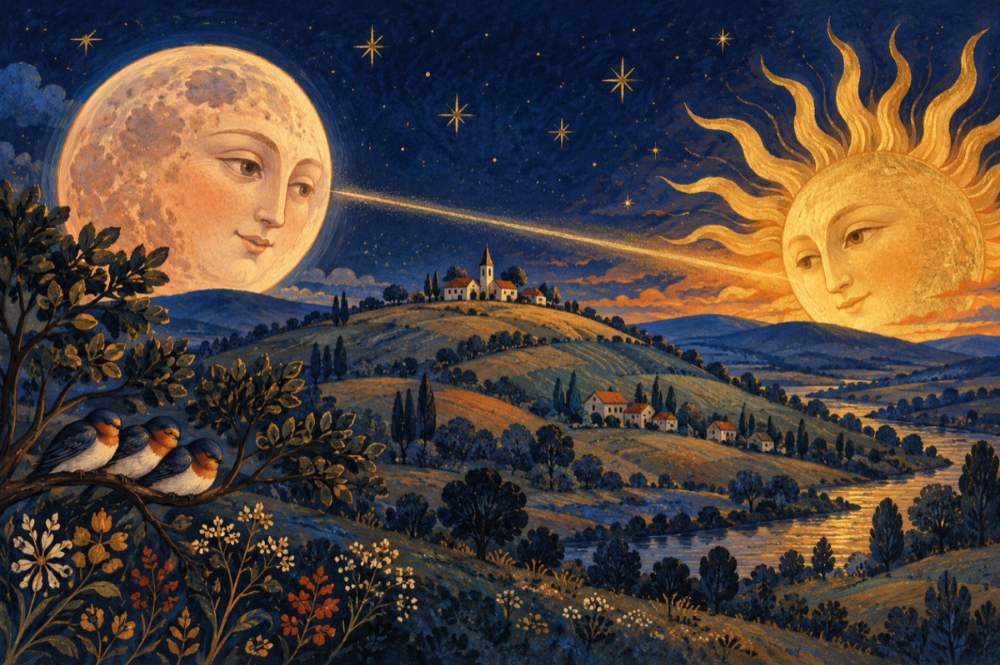

O seară de basm
De ziua nașterii nepotului nostru David
De după deal, apare-un disc enorm,
Cu luciul pal ca de aramă!
Iar păsările văzduhului, se pregătesc de somn.
E luna iubită, ce pe poet la muncă-l cheamă!
Da e luna; ce-a venit pe pământ,
Și pare-a fi plecată pe el, încet rostogolind!...
În partea cealaltă la apus, ca și un legământ,
Soarele, un disc enorm, spre lună se uită clocotind
Și-ncet încet, își lasă câte-o rază
În noaptea sfântă a serii, coborând.
Păstrând lumina precum un ostaș de pază,
Ce dăruiește lunii sclipiri, de pare-a fi arzând!
Am înțeles că soarele și luna sunt în simbioză.
Și niciodată ei doi nu se despart.
Pământul legătura între ei, neîncetat păstrează,
Și-n fiecare ciclu, zi și noapte, pământul le dă start!
LA MULȚI ANI DAVID!
Vasile Groza
Apare și în: Poezii de suflet.